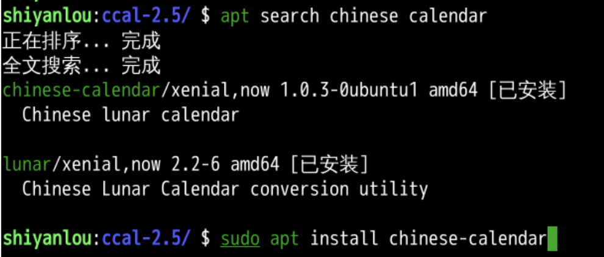
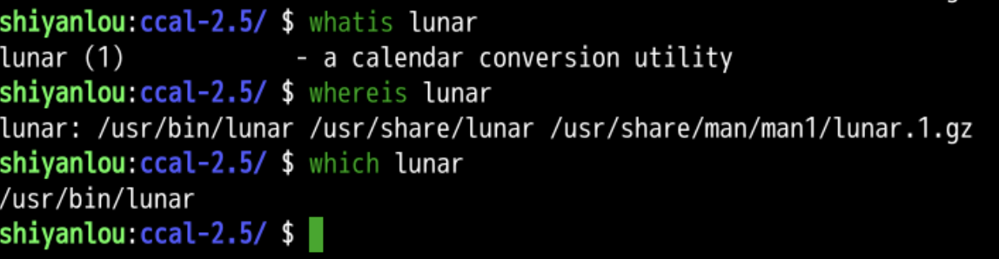
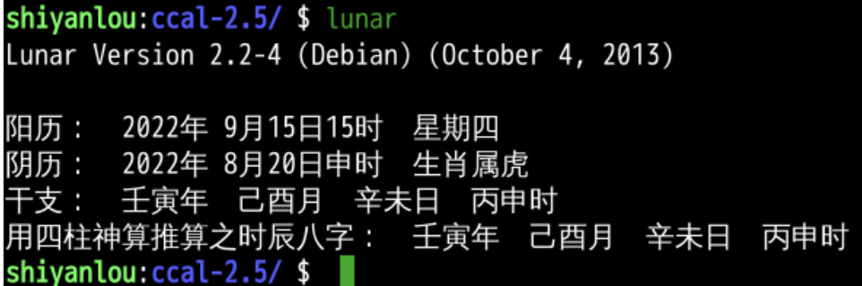
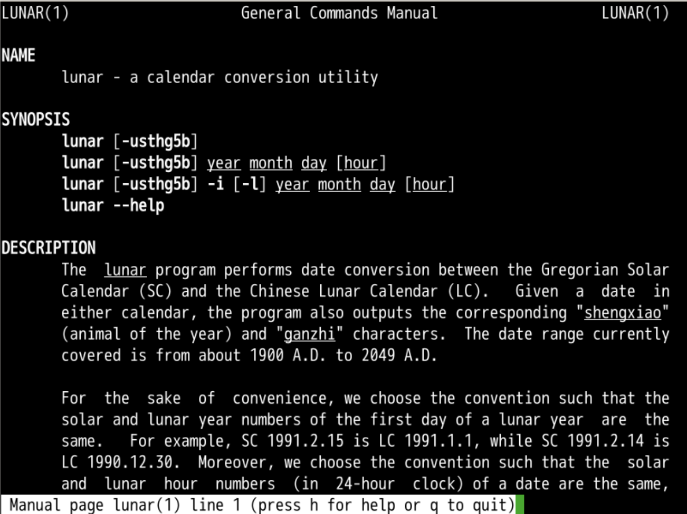
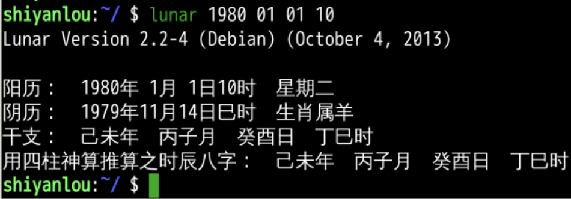
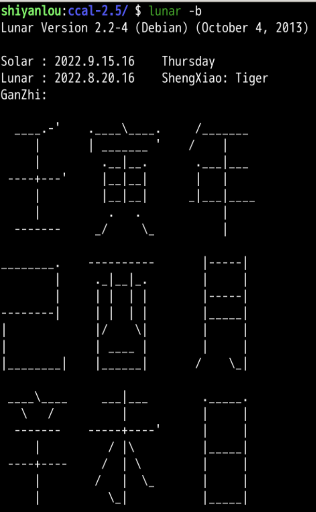
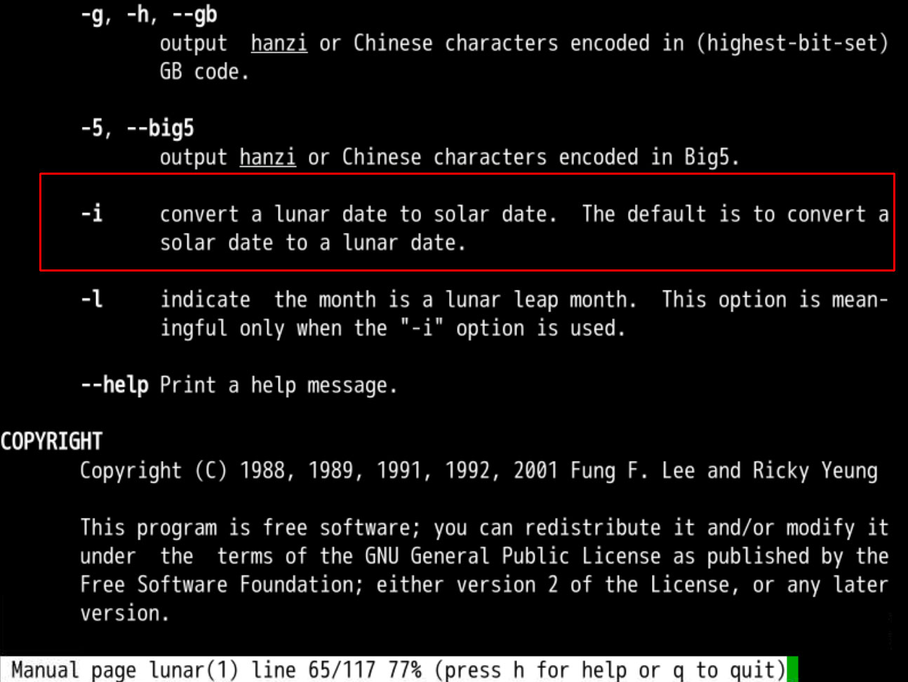
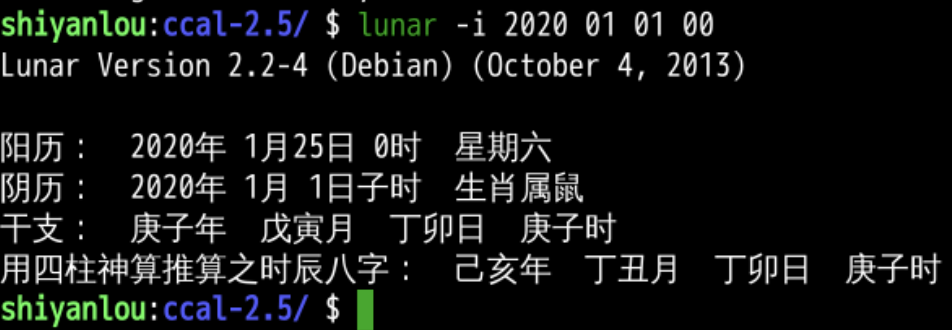
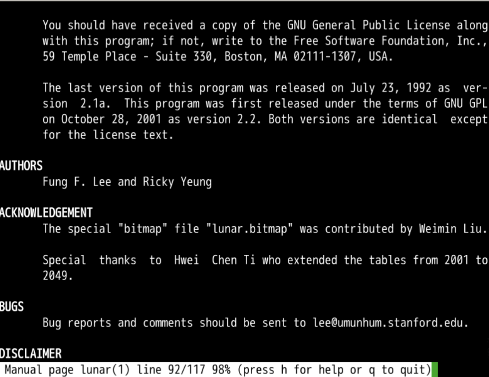

阴历(lunar)
回忆
- 上次我们研究了日历
- 这个日历
- 可以显示一个月的
- 也可以显示前后几个月的
- 还可以显示某一年的
- 日历来自于unix
- 不过这里面没有阴历
- 就是初一十五那种东西
- 我们可以在终端里面显示阴历么？
搜索

灵魂三问

八字

- 每一柱都有天干和地支
- 年月日时总共四柱
- 得到八字
- 可以得到你的生辰八字么？
转化


- 可以找到自己的阴历生日
- 可以看到由于没有过春节
- 这个日期并不属猴
- 而是数羊
- 也就是午马未羊的羊
- 年份属于己未年
- 时间用的也是东八区
- 赶紧拍照分享一下这熟悉的感觉
输出大字

通过阴历求阳历


作者

- 作者好像曾经在波士顿
- 92年写了一版
- 01年更新了
- 感谢
- 2049之后期待有人可以更新这个程序
总结
- 这次我们研究的是阴历
- 主要是把阳历日期转化为阴历
- 不是阴历日历
- 我们可以把我们的year给补全一下么？
- 每个月里面都有合适的文件名？🤔
- 下次再说👋